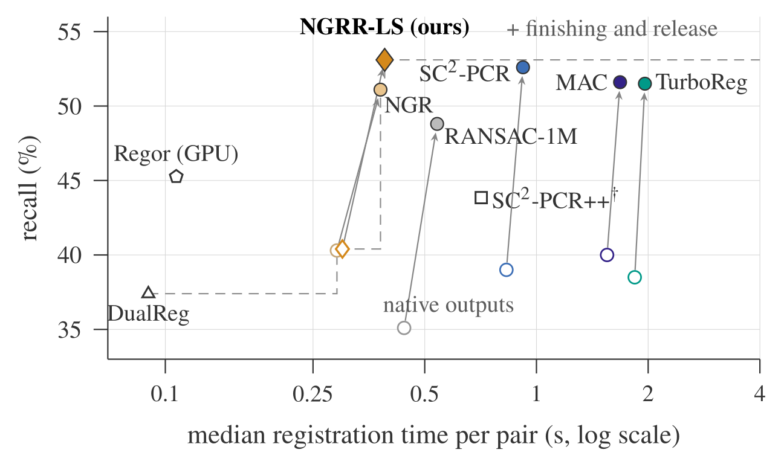
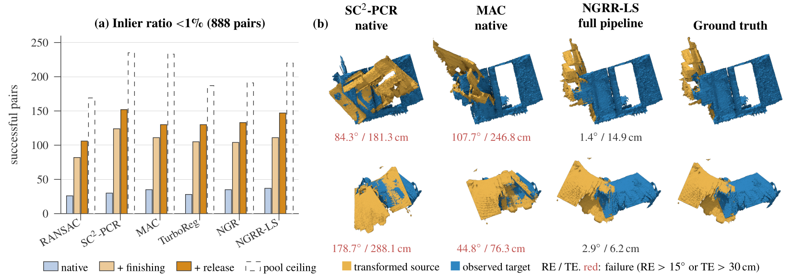
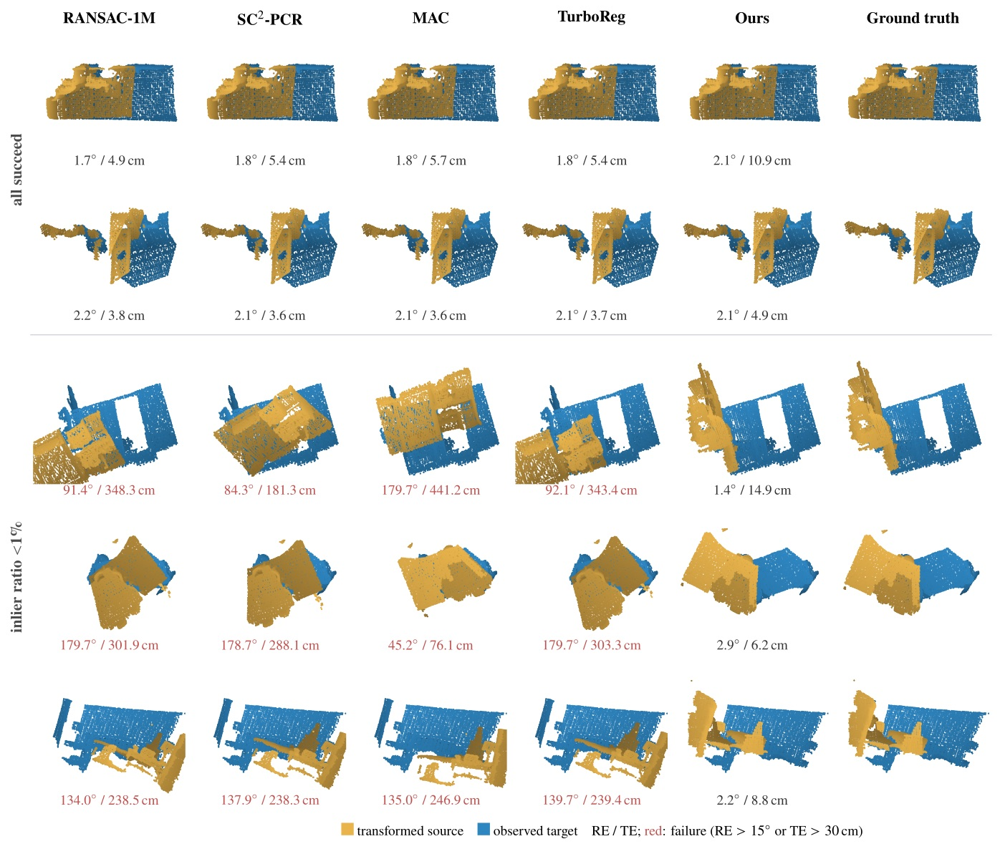

Nucleate, Grow, Refine, Release: A Chemical-Process Framework for Robust Point Cloud Registration
Abstract
Point cloud registration can fail even when a frontend has generated useful hypotheses. We introduce a training-free finishing and release backend for candidate pools from multiple frontends. Multi-stream finishing allocates a fixed surface-refinement budget using correspondence support, surface agreement and geometric information. Release combines geometric support with residual concentration. NGRR-LS complements this backend with a chemical-process-inspired generator: motif nucleation, finite site capacity and retained-composition growth preserve useful candidates. On all 1781 3DLoMatch+FPFH pairs, the same backend improves six frontends by 10.8 to 13.7 percentage points. Finishing takes 0.09 to 0.11 seconds with 16 CPU threads. With compiled NGRR-LS, the pipeline reaches 53.1% recall in 0.39 seconds. Controls with the same ICP and release rule isolate candidate allocation, while coverage–selection diagnostics distinguish recovery from final selection. These results support viewing robust registration as a budget-constrained process of recovering refinable hypotheses and converting them into a reliable final pose.
Method
At low overlap most putative matches are wrong: with FPFH on 3DLoMatch, 888 of the 1781 pairs have fewer than 1% correct matches. The six frontends we evaluate register 35.1 to 40.4% of these pairs natively, yet after up to 32 of their hypotheses are refined on the observed surfaces, a correct pose is present for 54.2 to 59.8% of the pairs. We therefore treat registration as two linked problems: recovery generates and preserves hypotheses that can be refined to the correct pose, and conversion spends a limited refinement budget on them and selects the final pose.
Nucleate. Candidate phases are seeded from compatible pairs or triples of matches, as seed crystals start crystallization in a dilute solution. Grow. A finite site capacity, borrowed from adsorption, gives each match the vacancy θx = 1/(1 + nx/q) and discounts matches that many seeds already use, so the seeds spread over several clusters. Growth that retains each phase's current composition, as in total reflux, then enriches the phase with compatible matches. Together these operations form the NGRR-LS frontend.
Refine. Multi-stream finishing allocates at most 32 point-to-plane ICP refinements across distinct candidates, using correspondence support, surface agreement and geometric information. Release. A release assay scores every refined pose by geometric support s and residual concentration h, and releases arg maxk min(sk, hk). Finishing and release form a backend that accepts the candidate pool of any frontend.
Results
Registration recall (%) on the same inputs (the first 5000 matches of each pair) for 3DMatch, 3DLoMatch and KITTI. The same finishing and release backend, with the same settings, improves all six frontends; on 3DLoMatch+FPFH the gains are 10.8 to 13.7 points. NGRR-LS + F+R reaches 53.1% there, against 52.6% for SC2-PCR + F+R (a paired difference that is not statistically significant), with a median time of 0.39 s against 0.92 s.
| 3DMatch | 3DLoMatch | KITTI | Time (s) | ||||
|---|---|---|---|---|---|---|---|
| Method | FPFH | FCGF | FPFH | FCGF | FPFH | FCGF | 3DLoMatch |
| Native output | |||||||
| RANSAC-1M | 82.32 | 92.48 | 35.09 | 57.94 | 99.64 | 97.30 | 0.44 |
| SC2-PCR | 83.67 | 92.91 | 38.97 | 58.28 | 99.46 | 95.86 | 0.83 |
| MAC | 82.99 | 93.47 | 39.98 | 59.01 | 99.64 | 95.68 | 1.55 |
| TurboReg | 83.73 | 93.35 | 38.46 | 58.67 | 99.82 | 95.50 | 1.84 |
| NGR | 83.36 | 92.85 | 40.26 | 58.96 | 99.82 | 95.32 | 0.29 |
| NGRR-LS | 83.43 | 93.16 | 40.43 | 59.24 | 99.64 | 95.32 | 0.30 |
| Methods that also use the point clouds | |||||||
| SC2-PCR++† | 87.86 | 93.72 | 43.85 | 60.42 | 99.82 | 98.20 | 0.71 |
| Regor | 88.91 | 94.15 | 45.26 | 61.31 | – | – | 0.11 GPU |
| DualReg | 82.07 | 92.73 | 37.39 | 58.28 | 94.05 | 93.51 | 0.09 |
| Each frontend + our finishing and release (F+R) | |||||||
| RANSAC-1M + F+R | 90.20 | 94.89 | 48.79 | 67.10 | 99.82 | 99.46 | 0.54 |
| SC2-PCR + F+R | 91.00 | 94.89 | 52.55 | 66.98 | 99.82 | 99.28 | 0.92 |
| MAC + F+R | 90.45 | 94.76 | 51.60 | 66.37 | 99.82 | 98.92 | 1.68 |
| TurboReg + F+R | 90.39 | 94.76 | 51.54 | 66.09 | 99.82 | 99.46 | 1.96 |
| NGR + F+R | 90.33 | 94.45 | 51.09 | 65.69 | 99.82 | 99.28 | 0.38 |
| NGRR-LS + F+R | 90.51 | 94.89 | 53.12 | 66.70 | 99.82 | 99.46 | 0.39 |
Bold and underline: best and second-best recall among the native rows and among the F+R rows. Time: median registration stage on 100 3DLoMatch+FPFH pairs with 16 CPU threads (MAC 12), except Regor (GPU); loading and features are excluded. †GPU accuracy with separate CPU timing. –: setting not available. Full pose errors and protocols are in the paper.
Accuracy and time

Recall on all 1781 3DLoMatch+FPFH pairs against the median registration-stage time (16 CPU threads). Hollow markers are native outputs; filled markers are the same frontends with the common finishing and release.
NGRR-LS with the backend has the highest recall, and every faster baseline reaches at most 45.3%.
Pairs with fewer than 1% inliers

(a) All 888 3DLoMatch+FPFH pairs below 1% inliers: native output, finishing, release and the refined-pool ceiling. Native outputs register 26 to 37 of these pairs, finishing registers 82 to 124 and release 106 to 152; NGRR-LS rises from 37 to 147. (b) Two recovery cases selected from the 97 pairs where the full pipeline succeeds and all four native baselines fail.
Real cases

3DLoMatch+FPFH. Gold: source transformed by each method's pose; blue: observed target. Columns 1–4 are each frontend's native output; “Ours” is NGRR-LS with finishing and release. Top: pairs that every method registers. Bottom: pairs with an inlier ratio below 1% on which all four baselines fail and ours succeeds. Rows were selected with a rule fixed before rendering.
Code
The repository contains the training-free CPU reference implementation of the NGRR-LS generator, surface finishing and release. It needs Python 3.11, NumPy, SciPy and PyTorch, and Open3D for ICP.
git clone https://github.com/siyuanj/NGRR.git
cd NGRR
pip install ".[surface]"Register matched points p, q using the observed surfaces; all coordinates and the inlier radius share one unit:
from ngr import register_with_surfaces
pose = register_with_surfaces(p, q, source_points, target_points,
inlier_radius=0.1, budget=32)
aligned = source_points @ pose["R"].T + pose["t"]Or apply finishing and release to the candidate poses of another frontend:
from ngr import refine_candidates
pose = refine_candidates(p, q, source_points, target_points,
candidate_rotations, candidate_translations,
native_pose={"R": native_R, "t": native_t},
inlier_radius=0.1, budget=32)BibTeX
@misc{xu2026ngrr,
title = {Nucleate, Grow, Refine, Release: A Chemical-Process Framework for Robust Point Cloud Registration},
author = {Xu, Chengrui and Jiang, Siyuan and Wang, Xiaonan},
year = {2026},
note = {arXiv preprint}
}